전파전자통신기능사 (2016-10-08 기출문제)
1과목: 임의 구분
1. 다음 중 레이다(Radar)의 최대탐지거리를 늘리는 방법으로 옳지 않는 것은?
- 수신감도를 높게 한다
- 송신 출력을 크게 한다
- 안테나 높이를 높인다.
- 안테나 이득을 적당히 낮춘다.
(정답률: 83%)

2. FM 수신기에서 AFC회로가 사용되는 이유는?
- 상호변조가 발생되는 것을 방지하기 위해
- 수신감도를 조정하기 위해
- 높은 주파수 신호의 진폭을 감소하기 위해
- 국부발진기의 주파수를 자동적으로 제어하기 위해
(정답률: 60%)
3. 다음 중 FM 수신기에 사용되지 않는 것은?
- IDC 회로
- 진폭제한기
- 스켈치 회로
- 주파수 변별기
(정답률: 51%)
4. 어떤 전송시스템에서 코드효율이 1이고, 전체효율이 0.8일 때 전송효율은?
- 1.8
- 1
- 0.8
- 0.2
(정답률: 86%)
5. SSB 송수신기의 특징으로 적당하지 않은 것은?
- 점유주파수대역폭인 DSB의 반으로 줄어든다.
- 주파수 이용도를 DSB에 비해 2배정도 증가시킬 수 있다
- 변조도가 1인 경우 소비전력은 DSB보다 적은 전력으로 작동될 수 있다.
- 외부잡음과 페이딩의 영향은 DSB의 경우와 같다
(정답률: 60%)
6. 전력 증폭기의 출력 임피던스를 공중선의 임피던스와 같게 해주는 것을 무엇이라 하는가?
- 바이어스
- 푸시풀 작용
- 임피던스 정합
- 주파수 체배작용
(정답률: 77%)
7. 전리층의 이론상 높이를 구하는 식으로 옳은 것은? (단, t는 지표파와 전리층 반사파와의 시간차, c는 빛의 속도이다.)
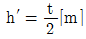
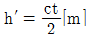

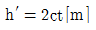
(정답률: 83%)
8. λ/4 수직접지 안테나의 높이(h)가 25[m]이라고 하면 이 안테나가 복사하는 전파의 파장은 λ는 몇 [m]인가?
- 1.5 [m]
- 25 [m]
- 50 [m]
- 100 [m]
(정답률: 56%)
9. 도약성 페이딩이 발생했을 때 이를 경감시키는 방법으로 옳은 것은?
- 공간 다이버시티 사용
- 전파 다이버시티 사용
- 주파수 다이버시티 사용
- 수신기에 AVC사용
(정답률: 45%)
10. 다음 중 일반적으로 단일지향성을 갖는 안테나는?
- 윈도 slot 안테나
- 수평 loop 안테나
- 야기 안테나
- whip 안테나
(정답률: 53%)
11. 위성통신용 지구국의 기본적인 구성이 아닌 것은 ?
- 송신계
- 수신계
- 안테나계
- 연료전지계
(정답률: 85%)
12. GMDSS적용 선박의중파(MF)대 무선 설비로서 반드시 갖추어야 하는 주파수와 장치로 옳은 것은?
- 2187.5 khz의 DSC 및 DSC WKR장치
- 2282.5 khz의 DSC 및 DSC WKR장치
- 2313.5 khz의 DSC 및 DSC WKR장치
- 2368.5 khz의 DSC 및 DSC WKR장치
(정답률: 83%)
13. 다음 중 위성통신의 특징에 대한 설명으로 적합하지 않은 것은?
- 지상 재해의 영향과 관계가 적다.
- 장거리 회선 설정이 쉽다.
- 정지위성을 이용하여 전 세계적인 통신망을 구성할 수 있다.
- 초기 설치비가 송수신거리에 비례하고 저렴하다.
(정답률: 80%)
14. 슈퍼헤테로다인 수신기에서 수신 신호파가 800[kHz], 국부발진주파수가 1,255[kHz]라면 영상주파수는?
- 455[kHz]
- 1,247[kHz]
- 1,710[kHz]
- 3,310[kHz]
(정답률: 59%)
15. 다음 평행 2선식 급전선의 특성 임피던스(Zo)의 값은 얼마인가? (단,공기중 ℇ5=1로 계산하시오)
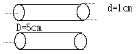
- 69Ω
- 138Ω
- 276Ω
- 552Ω
(정답률: 57%)
16. 표준신호발생기(SSG)의 출력 전압 10[uV]를 [dB]로 표시하면? (단, SSG에서 1[uV] 0[dB]이다)
- 10[dB]
- 20[dB]
- 30[dB]
- 40[dB]
(정답률: 56%)
17. 1[mW]는 몇 [dBm] 인가?
- 0[dBm]
- 10[dBm]
- 20[dBm]
- 30[dBm]
(정답률: 47%)
18. 측정한 파형의 일그러짐율이 10[%] 이다. [dB]로 환산하면 얼마인가?
- -10 [dB]
- -20 [dB]
- -30 [dB]
- -40 [dB]
(정답률: 63%)
19. 무선송신 설비에서 공중선 전류계의 지시가 2[A]이고, 공중선 전력이 40[W]일 때 공중선 실효저항은?
- 10 [Ω]
- 20 [Ω]
- 30 [Ω]
- 40 [Ω]
(정답률: 34%)
20. 무부하시 출력전압이 220[V]인 어느 전원회로에서 300[mA]의 전류가 흐를 때, 단자 전압이 200[V]로 낮아졌다면 손실전력은 얼마인가?
- 6 [W]
- 0.6 [W]
- 1 [W]
- 1.6 [W]
(정답률: 33%)
2과목: 임의 구분
21. 다음 문장이 정의하는 것으로 가장 적절한 용어는?
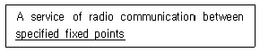
- mobile service
- radio service
- fixed service
- special service 고정국
(정답률: 63%)
22. 다음 무선국 용어에 대한 우리말 번역으로 잘못된 것은?
- Aircraft station : 고정국
- Coast station : 해안국
- Survival craft station : 구명이동국
- Broadcasting station : 방송국
(정답률: 77%)
23. 다음 문장의 괄호 안에 가장 적당한 단어는?
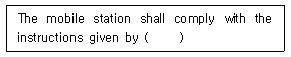
- the coast station
- the land station
- the ship station
- the host station
(정답률: 48%)
24. 다음 문장에서 괄호 안에 들어갈 가장 적절한 단어는?
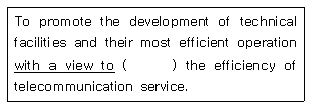
- improve
- improving
- be improving
- having improving
(정답률: 64%)
25. 다음 문장의 밑줄 친 부분과 동의어로 가장 적합한 것은?
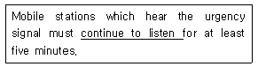
- keep watch
- keep down
- keep in
- keep off
(정답률: 60%)
26. 다음 문장의 괄호 안에 들어갈 적당한 단어는?
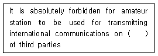
- behalf
- sent
- fear
- peat
(정답률: 61%)
27. 다음 문장 중 괄호 안에 알맞은 것은?
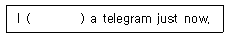
- send
- sent
- have sending
- sending
(정답률: 49%)
28. 다음 중 조난통신을 방해하는 국에 대하여 조난통신 관장국에서 통신정지 요구(침묵유지) 시 사용하는 용어로 맞는 것은?
- SEELONCE MAYDAY
- SOS QRT
- QRT DISTRESS
- SEELONCE DISTRESS
(정답률: 60%)
29. "How do you read me?" 의 무선절차 요어로서 적합한 의미는?
- 감도는 어떠합니까?
- 어떻게 읽을까요?
- 어떻게 읽을 수 있습니까?
- 어떻게 이해하셨습니까?
(정답률: 84%)
30. "NOVENINE"은 어느 숫자의 전송 약어인가?
- 2
- 5
- 7
- 9
(정답률: 84%)
31. 다음 중 무선통신에 관련된 약어의 뜻으로 옳은 것은?
- PCS : 직접배달통신
- CDMA : 진폭변조방식
- TRS : 주파수공용통신
- ISDN : 초집적회로
(정답률: 54%)
32. 다음 중 알파벳 통화표의 발음 강세를 실선으로 표시한 것으로 틀린 것은?
- Y: YANG KEY
- K: KEY LOH
- P: PAH PAH
- X : ECKS RAY
(정답률: 47%)
33. Choose the suitable one in the blank and complete following sentence
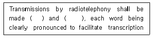
- slowly, distinctly
- fast, distinctly
- exactly, slowly
- moderately, slowly
(정답률: 44%)
34. Arrange in order by four levels of priority in maritime mobile service.(오류 신고가 접수된 문제입니다. 반드시 정답과 해설을 확인하시기 바랍니다.)
- Emergency communications ＞Distress calls ＞Urgency communications ＞Safety communications
- Distress calls ＞ Emergency communications ＞ Urgency communications ＞ Safety communications
- Distress calls ＞ Urgency communications ＞ Other communications＞Safety communications
- Distress calls ＞ Urgency communications ＞ Safety communications ＞ Other communications
(정답률: 58%)
35. 다음 문장을 올바르게 해석한 것은?
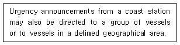
- 해안국으로부터 송신되는 비상방송은 선박 그룹이나 특정 지역에 있는 선박에게 보내질 수 있다.
- 해안국으로부터 송신되는 긴급통보는 선박 그룹이나 특정 지역에 있는 선박에게 보내질 수 있다.
- 해안국으로부터 송신되는 긴급호출은 많은 선박이나 제한된 지역에 있는 선박으로 향할 수 있다.
- 해안국으로부터 송신되는 비상통보는 많은 선박이나 제한된 지역에 있는 선박으로 향할 수 있다.
(정답률: 82%)
36. 다음 문장의 괄호 안에 들어갈 가장 적절한 단어는?
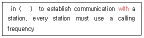
- order
- part
- receiving
- most
(정답률: 68%)
37. 다음 영문의 가장 적합한 해석은?
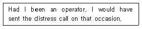
- 내가 통신사가 되었을 때, 그 경우에 조난신호를 보낼 것이다.
- 내가 통신사였기 때문에 그 경우에 나는 조난신호를 보낼 수 있었다.
- 만일 내가 통신사였더라면, 그 경우에 조난신호를 보냈을 텐데
- 내가 통신사라면, 그 경우에 조난신호를 보낼 텐데
(정답률: 73%)
38. 다음 중 표준 해사 용어의 의미가 잘못된 것은?
- Discharging: 충전
- Loading: 선적
- Liner : 정기선
- Fish Finder: 어군탐지기
(정답률: 78%)
39. 다음의 문장의 밑줄 친 부분의 해석으로 가장 적합한 것은?
- 수행하여야 한다
- 수행이 금지된다.
- 가급적 수행토록 한다.
- 수행을 강조하여야 한다.
(정답률: 81%)
40. 다음 문장의 영어 번역으로 가장 적절한 것은?
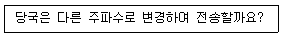
- Will you send on this frequency?
- Shall I change to transmission on another frequency?
- Will you send on another frequency?
- What working frequency will you use?
(정답률: 74%)
3과목: 임의 구분
41. 미래창조과학부장관(방송통신위원회)는 주파수 회수 또는 주파수 재배치에 따른 손실을 보상하여야 하는데 시설자로부터 손실보상청구서를 받은 날로부터 몇 일 이내에 손실보상금액을 결정 통지하여야 하는가?
- 10일
- 30일
- 60일
- 120일
(정답률: 66%)
42. 주어진 발사종별의 전파에 대하여 특정한 조건하에서 사용되는 통신방식에 필요한 전송 속도와 품질로 정보를 전송하는데 충분한 주파수대폭을 무엇이라 하는가?
- 점유주파수대폭
- 스퓨리어스대폭
- 필요주파수대폭
- 특성주파수대폭
(정답률: 68%)
43. 기지국의 개설허가의 유효기간은?
- 5 년
- 3년
- 2년
- 1년
(정답률: 78%)
44. 등록대상 주파수를 사용하는 무선국을 개설하고자 하는 자는 어느 기관에 해당 주파수에 대한 국제등록신청을 요청하여야 하는가?
- 미래창조과학부
- 한국방송통신전파진흥원
- 전파진흥협회
- 우체국
(정답률: 41%)
45. 선박이나 항공기의 항행 중에 발생하는 중대한 위험을 예방하기 위하여 해당 신호를 먼저 보낸 후에 하는 무선통신은?
- 안전통신
- 긴급통신
- 비상통신
- 조난통신
(정답률: 57%)
46. 다음 중 적합인증 대상기자재가 아닌 것은?
- 경보자동전화장치
- 의료용 고주파이용기기
- 네비텍스수신기
- 이동가입무선전화장치
(정답률: 69%)
47. 전파이용의 촉진과 전파와 관련된 새로운 기술의 개발과 전파방송기기 산업의 발전 등을 위하여 전파진흥기본계획을 몇 년마다 세워야 하는가?
- 2년
- 3년
- 4년
- 5년
(정답률: 41%)
48. 무선통신 업무에 종사하는 자가 조난통신의 조치를 하지 아니하거나 지연시킨 경우의 벌칙은?
- 2년 이하의 징역 또는 2천만원 이하의 벌금
- 3년 이하의 징역 또는 3천만원 이하의 벌금
- 5년 이하의 징역 또는 5천만원 이하의 벌금
- 10년 이하의 징역 또는 1억원 이하의 벌금
(정답률: 60%)
49. 선박이나 항공기가 중대하고 급박한 위험에 처할 우려가 있는 경우에 해당 신호를 먼저 보낸 후에 하는 무선통신은?
- 안전통신
- 긴급통신
- 비상통신
- 조난통신
(정답률: 51%)
50. 다음 중 해상무선통신 종사범위가 아닌 것은?
- GMDSS관련 무선전화설비의 통신운용
- GMDSS 관련 보조설비의 통신 운용
- 레이다 외부의 전화장치로서 전파의 질에 영향을 주는 기술운용
- 전파전자통신기능사 이상의 지휘 아래 하는 통신운용
(정답률: 67%)
51. 다음 중 무선통신의 원칙으로 옳지 않은 사항은?
- 무선통신의 내용은 필요 최소한의 사항은 이루어져야 한다
- 무선통신에 사용하는 용어는 가능한 상세해야 한다
- 무선통신을 하는 때에는 자국의 호출부호∙호출명칭 및 표지부호를 붙여서 그 출처를 명확하게 하여야 한다
- 무선통신을 하는 때에는 정확하게 송신을 하여야 하며, 오류를 인지한 때에는 즉시 정정하여야 한다
(정답률: 76%)
52. 다음 중 무선설비 적합성평가의 전부 또는 일부를 면제할 수 있는 경우가 아닌 것은?
- 시험연구를 위하여 제조하거나 수입하는 경우
- 국내에서 판매하지 아니하고, 수출 전용으로 제조하는 경우
- 전시 등에 사용하기 위해 제조하거나 수입하는 경우
- 국내 산업체 등이 사업장내서만 사용을 위해 수입하는 경우
(정답률: 51%)
53. 다음 괄호 안에 들어갈 적당한 것은?
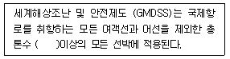
- 100톤
- 200톤
- 300톤
- 400톤
(정답률: 77%)
54. ITU 헌장과 협약의 부속서 형식인 업무규칙의 하나로 전파관리의 세부적이고 실질적인 기준을 정한 기본 규정이라 할 수 있는 것은?
- 전파규칙
- 국제전기통신규칙
- 국제전기통신연합협약
- 국제전기통신연합 헌장
(정답률: 48%)
55. 국제전기통신규칙(ITR)을 부분적으로 개정할 수 있는 곳은?
- 전파관리위원회
- 세계전파통신회의
- 국제전기통신세계회의
- 세계전기통신표준화회의
(정답률: 47%)
56. 국제전기통신연합(ITU) 전권위원회가 휴회 중에 이를 대신하여 업무를 수행하는 기관은?
- 사무총국
- 국제전기통신 세계회의
- 이사회
- 전권위원회의
(정답률: 69%)
57. 다음 중 통신 보안 위규사항이 아닌 것은?
- 적성국 통신소와의 교신
- 공개할 수 없는 외교 조약 누설
- 첩보 수집사항 누설
- 통신제원의 수시변경
(정답률: 76%)
58. 암호표를 가지고 암호의 내용을 알아내는 것을 무엇이라고 하는가?
- 암호분석
- 암호해독
- 암호연구
- 암호습득
(정답률: 79%)
59. 무선통신 운용 및 안보상 필요로 하여 합법적인 법 절차에 의하여 통신을 감독하는 행위는?
- 도청
- 감청
- 통화
- 비밀
(정답률: 79%)
60. 다음 중 비밀누설에 대한 방지법으로 볼 수 없는 것은?
- 통신보안 생활화
- 통신규율 중시
- 중요내용은 전신부호를 사용
- 감독 강화
(정답률: 64%)